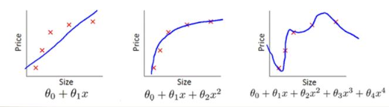

关于作者
关于作者
过拟合/欠拟合
导致泛化性差有两个很重要的原因，即过拟合和欠拟合。本节将详细介绍一下
下图可以形象的展示欠拟合和过拟合的形式，欠拟合的问题在于拟合的公式太简单，无法描述大多数数据集的分布。 过拟合反而过于追求每一个训练集的分布，导致拟合公式过于复杂，有点类似于死记硬背，没有理解数据背后的规律，泛化能力差。

欠拟合效果展示
当我们使用上节的minist实现代码，定义网络参数为10的话，
if __name__=="__main__":
net = network.Network([784, 10, 10])
net.SGD(training_data, 30, 10, 3.0, test_data=test_data)
结果只能达到80%，很明显这比30个隐藏神经元的效果差，这种模型在训练集上的表现较差，无法很好地拟合训练数据的真实分布的情况被称为欠拟合。
当模型过于简单时，模型无法学习到训练数据中的复杂关系，导致模型无法很好地拟合数据。当训练数据过少时，模型的泛化能力也会受到限制，因为模型没有足够的数据来学习数据的真实分布。
欠拟合产生原因
造成欠拟合的原因主要有：
1、模型复杂度过低：当模型过于简单时，模型无法学习到训练数据中的复杂关系，导致模型无法很好地拟合数据。例如，在图像分类任务中，如果模型只有一层线性层，那么模型的表达能力就非常有限，无法很好地拟合数据。
2、数据量过少：当训练数据量过少时，模型的泛化能力也会受到限制，因为模型没有足够的数据来学习数据的真实分布。例如，在图像分类任务中，如果只有很少的图像数据可用于训练，那么模型就很难学习到图像数据的复杂特征和关系。
3、过度的正则化：当过度使用正则化技术（如L1正则化、L2正则化、Dropout等）时，模型可能会过于简单，从而导致欠拟合的问题。例如，在使用L1正则化时，如果正则化参数太大，那么模型可能会过于稀疏，无法学习到训练数据中的复杂特征和关系。
4、特征不足：当特征提取不足时，模型无法很好地学习到数据中的关键特征，从而导致欠拟合的问题。例如，在图像分类任务中，如果只使用了图像的像素值作为输入特征，而没有对图像进行特征提取，那么模型就无法学习到图像中的更高级别的特征，从而导致欠拟合的问题。
欠拟合解决方法
为了解决欠拟合问题，可以采用以下方法：
增加模型复杂度：当模型过于简单时，可以通过增加模型复杂度来提高模型的拟合能力。例如可以通过增加模型的层数、增加每层的神经元数、使用更复杂的激活函数等方法来增加模型的复杂度。
增加数据量：增加数据量是解决欠拟合问题的最有效方法之一。更多的数据可以帮助模型更好地学习数据的真实分布，从而提高模型的泛化能力。
正则化：正则化技术可以限制模型的复杂度，避免模型过度拟合训练数据。常用的正则化技术包括L1正则化、L2正则化、Dropout等。
特征工程：特征工程是指对原始数据进行一些预处理和特征提取，从而提高模型的泛化能力。例如可以通过特征选择、特征变换、特征提取等方法来增加模型的拟合能力。
过拟合效果展示
那是不是网络中间层数量变多效果就会提升呢，我们尝试将网络中间参数设为两层100看看训练结果。
if __name__=="__main__":
net = network.Network([784, 100, 100, 10])
net.SGD(training_data, 30, 10, 3.0, test_data=test_data)
实验发现训练的精度提升了，但是测试精度反而下降了。 这种现象被我们称为过拟合，是指模型在学习训练数据时过度拟合了训练数据的细节和噪声，导致模型对新数据的预测不准确。
过拟合产生原因
造成过拟合的原因主要有：
1、训练数据集样本单一，样本不足。如果训练样本只有负样本，然后那生成的模型去预测正样本，这肯定预测不准。所以训练样本要尽可能的全面，覆盖所有的数据类型。
2、训练数据中噪声干扰过大。噪声指训练数据中的干扰数据。过多的干扰会导致记录了很多噪声特征，忽略了真实输入和输出之间的关系。
3、模型过于复杂。模型太复杂，已经能够“死记硬背”记下了训练数据的信息，但是遇到没有见过的数据的时候不能够变通，泛化能力太差。我们希望模型对不同的模型都有稳定的输出。模型太复杂是过拟合的重要因素。
过拟合解决方法
增加数据量：增加数据量是解决过拟合问题的最有效方法之一。更多的数据可以帮助模型更好地学习数据的真实分布，从而提高模型的泛化能力。
简化模型：减少模型的复杂度可以减少模型对噪声和细节的拟合，从而提高模型的泛化能力。例如可以通过减少模型的层数、减少每层的神经元数、使用正则化等方法来简化模型。
使用正则化技术：正则化技术可以限制模型的复杂度，防止模型过度拟合训练数据。常用的正则化技术包括L1正则化、L2正则化、Dropout等。
交叉验证：交叉验证是一种评估模型泛化能力的方法，可以评估模型在不同数据集上的性能，从而避免过拟合的问题。
提前终止：在训练过程中，可以通过监控模型在验证集上的性能，来判断模型是否已经过拟合。一旦模型在验证集上的性能开始下降，就可以提前终止训练，从而避免过拟合的问题。
参考
https://github.com/mnielsen/neural-networks-and-deep-learning/blob/master/src/network.py